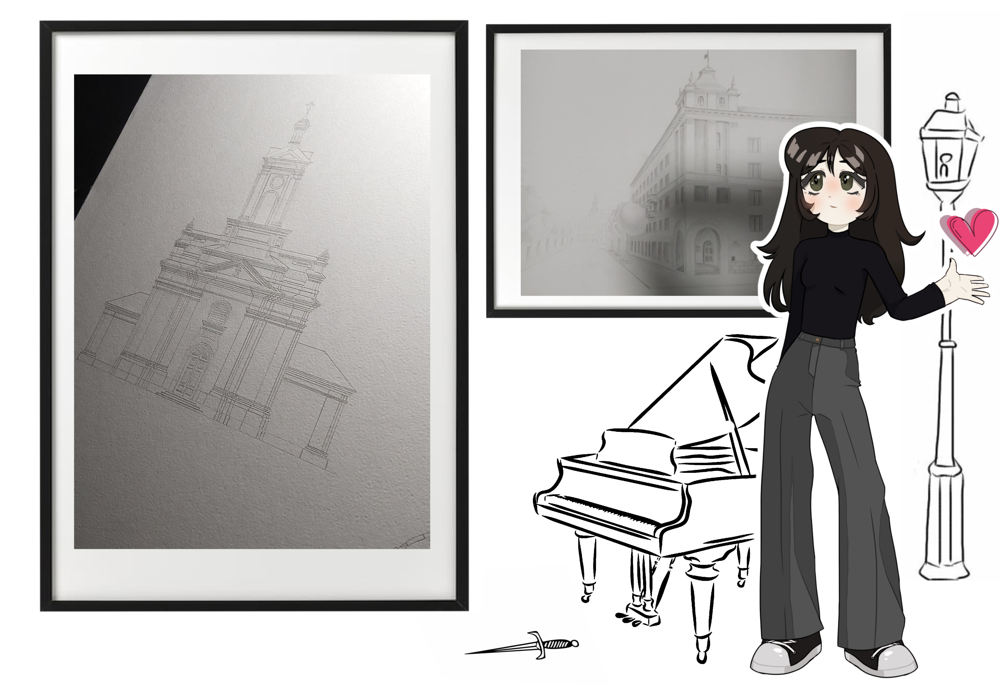
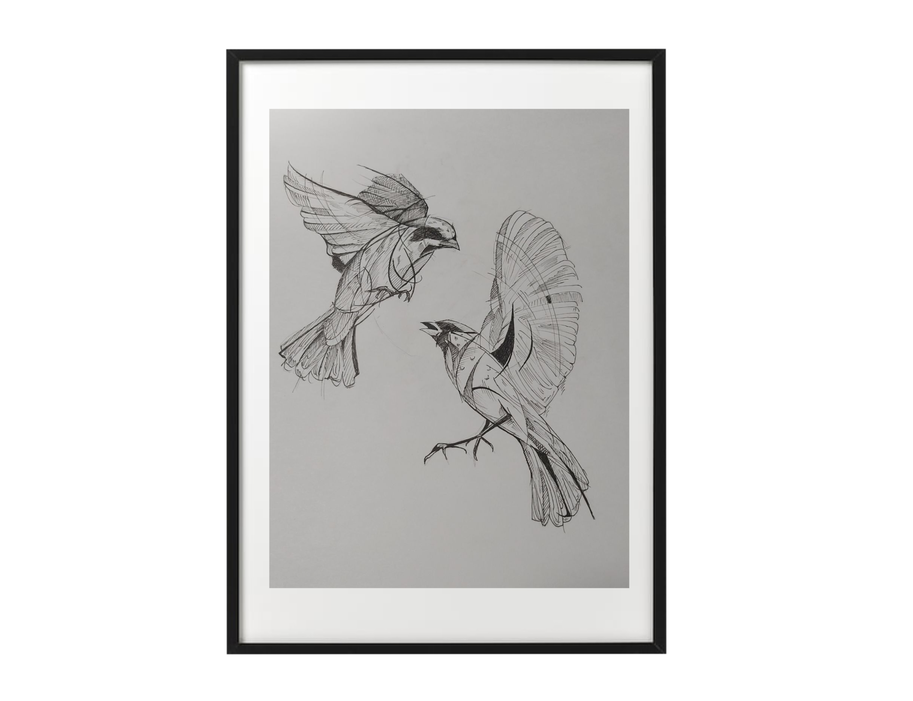
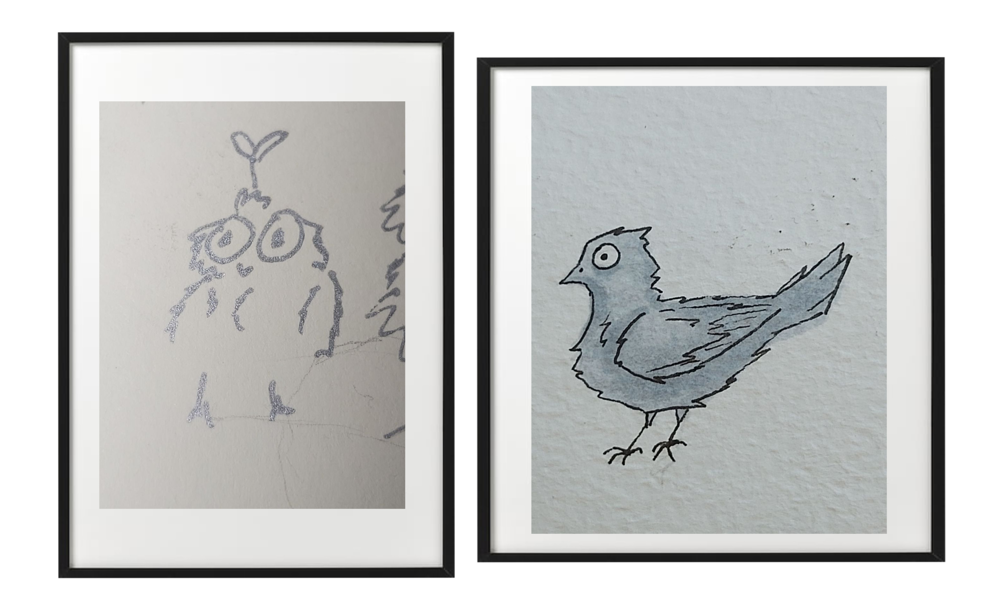
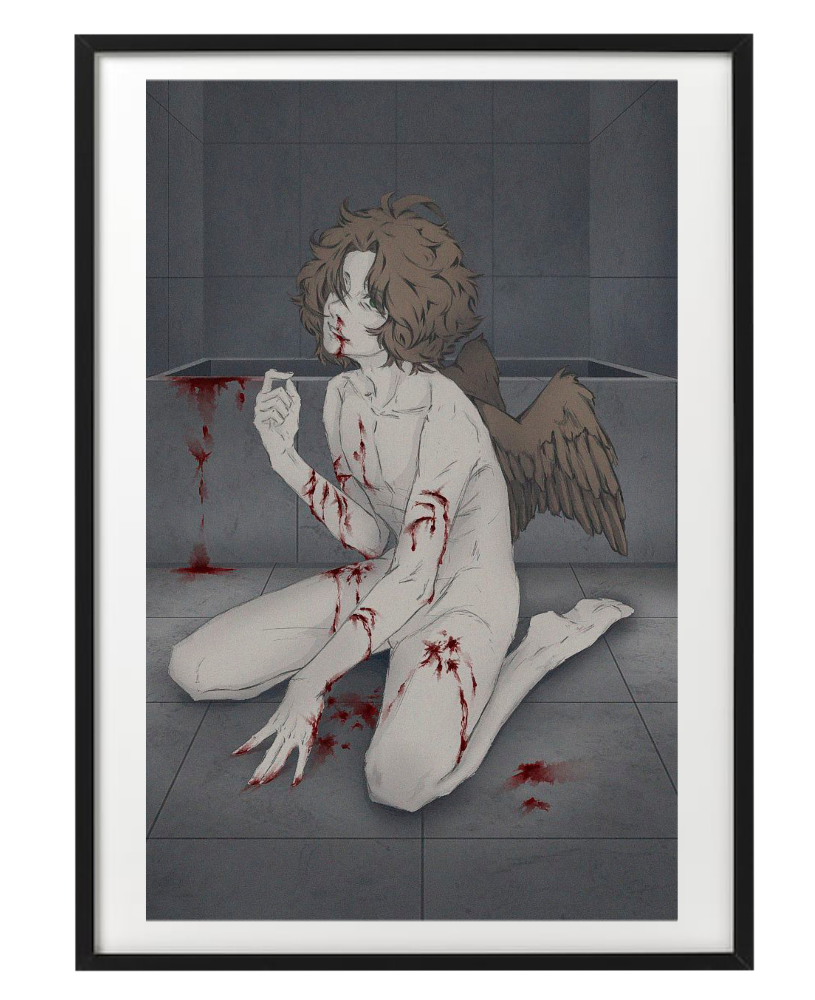
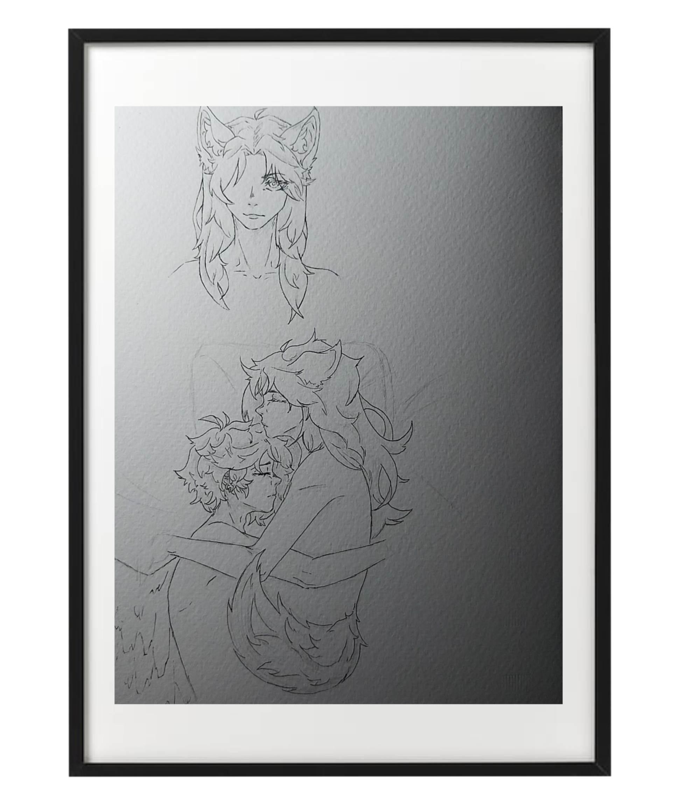
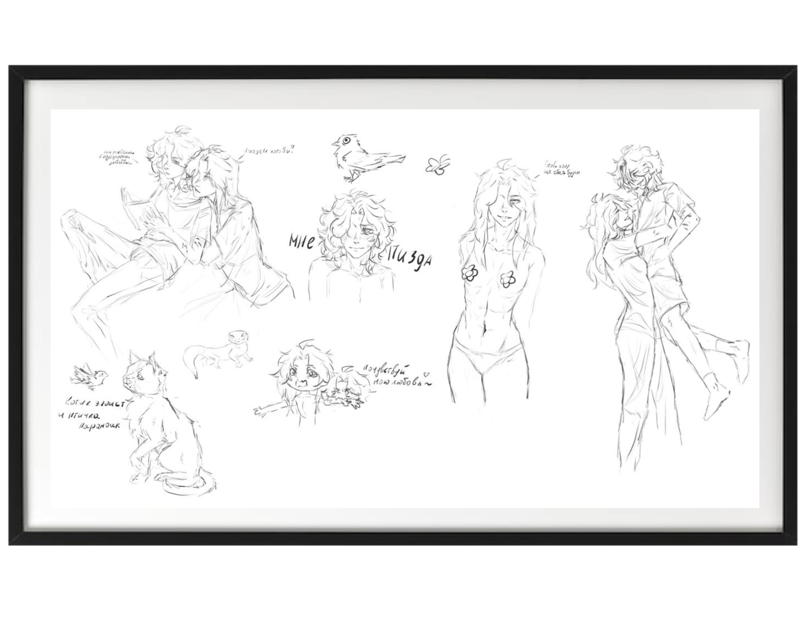

@ музей создан при поддержке Мотички
— Итак, всем здравствуйте и добро пожаловать в музей, который посвящен прекрасным работам такого великого человека – Жорушка. Путник, ты не знаешь кто это такой? Тогда ты полный ебаный в рот долбаёб, потому что это самый прекрасный человек на этом свете. Ах, ну что мне говорить таким людям, если они ничего не выкупят и не поймут)
— Что, у тебя вопрос как ты здесь оказался? Ох, так сегодня же 17 июня… ну да, точноооо, тебе же ничего это не говорит. Тогда просто запомни, что у этого человека, перед чьим зданием ты сейчас стоишь, сегодня др. Да мне плевать, шёл ты там на работу, или в школу, или вообще в псих больницу, я – всемогущая Лися, которая тепнула тебя сюда. И сегодня…. ТЫ ЦЕЛЫЙ ДЕНЬ БУДЕШЬ СЛУШАТЬ МОИ БРЕДНИ И ИСТОРИИ. Ты видел красоту этого мира? Ты видел? Да ты нихуя не видел, и так уж и быть, я покажу тебе сегодня самое животворящее этого мироздания, хих, пошли быстрее и даже не думай отставать от меня (=ᴖ ﻌ ᴖ=) 🔪
*вас схватили за руку, и вы почувствовали, что ваше теле начинает разделяться на мелкие кусочки, точнее пиксели. Сначала ноги, затем, когда от них не осталось ничего, шлейф пикселей шел уже по всему теловищу, всё выше и выше. Нижняя часть перестала чувствоваться, посмотрев последний раз на девушку, вы прикрыли глаза от страха. Прикосновение до сих пор казалось теплым, хоть ничего уже не было видно, и вы оказались…*
Данная работа сделана с любовью в сердце и почках. Она никого не оскорбляет, разве только что людей, которые ебут собак. Честно, это пиздец ужасно, перестаньте нахуй так делать, для кого придумали порно и секс-игрушки? Чтож, а ещё, эту ебаную ссылку никто не сможет получить) Так что никто и никогда не увидит ваши работы, без вашего же решения или разрешения, я крч не ебу, как там правильно и официально говорить об авторских правах. В общем, я считаю, что всё самое главное я сказал, в пизду, поехали дальше. Жора, не убивай меня, пожалуйста
главный зал
— Добро пожаловать в главный зал! И да, не забудь купить билетик. На что тебе его покупать? Да я откуда ебу, нам нужны денюжки, так как Жорушка собирается снова когда-то поехать в Египет, наверно.
— В общем, в главном зале мы всегда повествуем о биографии автора музея… Но знаешь, что… я думаю, что никто не имеет право это знать, поэтому иди нахуй, знать о его жизни буду только я и точка. Но если говорить вкратце, то жила была черепаха и тигр, они полюбили друг друга и появился воробушек Жорушка. А потом в жизни воробушка резко пизданулась Лися, устроилась там поудобнее и жила как-бы. Ну, там ещё много чего, к примеру цветение лилии, желание укусить за жопу Дымка… но это мы пропустим, окей?
— У данного автора очень много имен. Возможно, ты слышал о нём, как о «Журавлике», «Воробушке», «Жосуйка», «хочу с6 Сяо» …. Не, не слышал? Ну тогда не знаю, что, запомни блять наконец-то. В общем, просто знай, что это самый лучший человек на этом свете и я его буду любить безумно вечно, за его доброту, красоту, прекрасные взгляды на вещи, за его скованность и стеснение, и зато, что это самый первый человек в моей жизни, который хоть что-то во мне хорошее заметил… Я просто его безумно обожаю, и мне не нужны какие-то там Ван Гоги, Рафаэли, Амадеи Моцарты и прочие долбаёбы. У меня уже есть мой прекрасный художник, моя муза, мой бог… и я жду когда же мой бог наконец-то мне даст КХМ. Я, думаю, на этом прекрасном моменте мы можем переходить в галерею, точнее в зал «начало», хых
зал начало
— Наверно, это самый не любимый зал Жоры, потому что он не любит свои старые работы. А вот я, например, их обожаю, так как именно с этого момента со мной стали делиться такими прекрасными творениями. Может кому-то это покажется и некрасивым, неправильным, непропорциональным, но вот, по-моему, в них всё идеально. Если не нравится – выход там блять
— Начну, пожалуй, с первой работы, которую мне позволили увидеть, её я называю «холодная душа». Почему такое название? Да я не ебу, оно у меня ассоциируется с раскрытием автора, как будто мне только позволили краем глаза заглянуть в сердце или душу человека. Но эта душа, на тот момент, ещё была несколько мне непонятной, скрытной, напуганной, спрятанной глубоко-глубоко, далеко-далеко, как горизонт на этой картине…

— В этом зале нахятся очень старые карины, с учётом тысяч пересохранений и переносов они стали хрупкими. Поэтому, убедительная просьба, не трогать их руками. В любой момент они могут развалиться на огромное количество пикселей и вряд-ли я смогу потом собрать это в целое изображение, формата jpg
— Так же, тут представлено ещё несколько картин того времени. К примеру, одна из них, это портреты родителей автора, которая была сделана на уроке информатики. Представь, насколько надо быть талантливым, чтобы нарисовать такую красоту, за один урок, выражаю своё почтение
зал архитектурка-шарага
— Да, адекватное название для этого зала никто придумать не смог, да и как-бы ваши эти колледжи, студенческое время и всякая подобная хуйня не заслуживает нормальных названий, заслужено в общем. Что можно сказать об этом месте? Ну, тут начался другой период творчества Жоры, здесь появилось кучу шикарных работ, на которые наверно было убито уйму времени и нерв. Но ничего, нервы до поры до времени железные, зато осталась такая красотень.
— Я не владею всякими шикарными терминами архитекторов, поэтому…. Давай просто молча полюбуемся профессионализмом творца, окей?
— Хотя лучше не молча, предлагаю послушать вам музыку, в последнее время она у меня слишком сильно ассоциируется с моими эмоциями к Жорушке...
*загадочная персона щёлкнула пальцами и вмиг в зале появился файл, формата mp3 с называнием STIGMATA.mp3. Менюшка запуска музыки перекрыла ваш взгляд, от такого насильного предложения было тяжело отказаться*STIGMATA — Как ты
— Ещё одной из шикарных работ является данная дверка. Нет, это не дверь в Нарнию или ещё в какой-то загробный мир, это дверь в моё сердце, ало. Ну, комон, это настолько шикарно, что у меня опять же нет слов, чтобы что-то говорить. Данную работу сначала у Жорушки своровали в шараге, а потом вернули и теперь мы всем селом счастливы. Я, конечно, так ждал, что будет точно такой же домик, но у автора устали лапки и поэтому я собираюсь жить в этой двери. Ты только посмотри на эти шикарные фонарики. Мотя ещё предлагал туда поставить светодиодик, но это слишком мутерно и провода мешались бы, и так всё заебись
— Просто красивые птички :р
зал интересных работ
*вы идете дальше по длинному коридору и кажется, что этот музей бесконечный. Сбитые с толку, от всех обстоятельств, что здесь происходят, приходит осмысление, что нужно как-то уходить отсюда. Все эти картины, непонятные истории, не имеющие никакого смысла, так и не дают ответ на вопрос «что я блять тут нахуй делаю». И эта странная девушка, которая кажись тут в роле экскурсовода явно не собирается отпускать вас. Вы решаетесь задать вопрос ей, по поводу всех ваших мыслей, пока время идет в этом огромном коридоре*
— Хм, в чём смысл? Его нет, нет смысла ни в чём. Всё когда-то заканчивается, всё когда-то умрет, как и я, как и ты. Но зачем же я тебя сюда засунул… Знаешь, человечишка, думаю тебе очень-очень повезло :з
*лицо девушки выражало какую-то неестественную улыбку, словно нарисованную*
— Ну чтож, спустя столь длинный коридор, рада приветствовать тебя в этом зале. О чём он? Хах, он такой же, как и смысл жизни – в нём нет смысла :), по сути, я просто не знала куда лучше поместить такие работы на разные тематики, поэтому для таких картин было сделано отдельное помещение. Я обожаю каждые каракули Жорушки и поэтому, даже таких маленьких картинок не могла не отделить местом на стенке. Они словно мои трофеи, добытые на охоте? Возможно. Для меня каждое полученное творение моего возлюбленного, словно очивка или достижение, буду ценить её вечно, словно последнюю каплю воды.
— Пожалуй, стоит перейти к самой галереи ахпхаха, тебе же так интересно. Нет? Лучше не говори так ахпхахпха, меня это крайне выводит из себя. Посмотри на этого шикарного пирата Кейю. Как он тебе? Такой же секси, как и в игре. Не знаю, нравится ли автору Кейя в сексуальном плане… не знаю… Надеюсь, что нет, не особо хочу выкалывать себе глаз, но секс со слизыванием винишка по всему телу могу устроить, хех
— А вот выставка шикарных птичек. Почему так много птичек? Ох, жди следующий зал, там вообще много крылышек будет. А вообще, Жора очень любит птичек, как интересный факт тебе в копилку, запомни, чел. Надеюсь, ты уже пишешь список того, что тебе нужно запомнить, думаю… тебе это понадобится ахпхахх
— Ну, и как вишенка на тортике, вот тебе две работы, которые мы рисовали вместе с Жорушкой. О да, самое красивое здесь нарисовал он. На самом деле, я сначала был счастлив, что со мной согласились сделать такую штучку… а потом я пожалел ахпхах. Не потому, что мне не понравилось, просто я вообще не умею рисовать. Позориться перед любимым человеком как-то такое себе, знаешь ли. Но результат мне очень понравился, вышло просто невероятно круто, хех
об авторе
— Всё-таки стоит нормально представить тебе того человека, кому посвящено всё это. Поэтому не переживай, у нас в музее есть и такой зал – про художника
— Сейчас, перед твоим взглядом находятся автопортреты художника, которому посвящен данный музей. Ох, какой же он шикарный, ты хоть предполагал, что автор настолько красивый? Нет? Вот и я тоже нет, хех. Ты задаешься вопросом, где можно увидеть человека с крылышками и что это за бред? Бред здесь только ты, сучий сын. А вот крылышки – это отдельная особенность Жорушки. Просто, многие люди их не видят, а вот мы с ним можем лицезреть на такую красоту. Не зря же, существуют кошечки с подобием крыльев. Знай, это наши дети с ним в прошлой жизни, хахаха
В принципе, вкратце автора можно описать так:
1) Пиздатый
2) Невъебенный
3) Ахуительный
4) Клёвый
5) Крышесносный
6) Разъебный
7) Нихуевый вообще
8) Секси
9) Горячий
10) ЕБАТЬ КАКОЙ
— А вот картина с черепом это про меня, даааа. Когда я умру – свой череп я завещаю Жорушке. Не уверен конечно, что мой череп настолько будет красивым, но я буду счастлив, что меня трогают… звучит конечно страшно, и жалко, что я не буду уже чувствовать тех прикосновений, но да ладно :з ТЫ ПРЕДСТАВЬ, ЭТА КАРТИНКА О НАШИХ ВЕСЕЛЫХ ВЕЧЕРНИХ ДИАЛОГАХ? Что ещё нужно для счастья, как не это?
— Как ты мог заметить, некоторые картины довольно трагичны… К примеру эта. Я считаю, что ты не достоин всё-таки знать истоки такого искусства, но знаешь… Творчество не всегда должно выглядеть счастливым, радужным и красочным. Это шикарный рисунок, который дает задуматься о многом. Ой, да конечно, тебе он вообще ничего не дает, только попробуй посчитать Жору псих-больным, я тебе голову нахуй оторву. Люди не всегда пребывают в счастливых эмоциях, поэтому и вдохновение не всегда приходит из-за счастья, просто забей, тебе не понять
— А вот, к примеру, как я понимаю, старые очертания его персонажа. Даже тут можно прослеживать маленький милый пластырь. По таким рисункам, можно наблюдать, как же много старается художник, как он поднимает свой скилл год за годом. А вот ты, до сих пор сидишь в сраном ютубе и пялишь на видео, запивая дешевым пойлом, не делая ничего в своей жизни, ха. Пошли дальше, даже не знаю, есть ли искупление таким людям как ты
*вас снова потянули за руку, и вы оказались во тьме. Вы ждали повторения, той же ситуации, как и в начале, когда вас разнесло на несколько миллиардов пикселей, но тьма так и не продолжала пропадать. Минуту спустя, вам послышался голос…*
? ? ? ? ?
— Страшно? Темно? Хахаха. Да, сейчас мы находимся в подвале этого музея. Да-да, это тоже своего рода зал, с определенной тематической выставкой. Сейчас минутку, я дам свету
*засверкало три огонька, исходящие от свечки. Свет распределялся всё дальше и дальше. Вы увидели силуэт девушке в своеобразной одежде, стиля какой-то Трансильвании, вампиров и 18 века*
— О, о, о, вот люблю этот зал, у него ахуенная пердистория. Однажды… Что ты сказала? Тебе не интересно? Ах, так….
*появилось небольшое командное окно, в который начало что-то вводиться двоичным кодом. Через мгновение, в руках леди появилась толстая веревка, словно из тех кинофильмов про убийц. Эмоция легкой улыбки сменилась на кровожадный пожирающий взгляд. Рука девушки сжалась в кулак и вы почувствовали находящий страх*
— Без обид, но разве я не говорил, что сегодня очень особенный день? Да ладно тебе паниковать, я просто прикрою тебе твой грязный рот, который покусился оскорбить творчество великого художника
*кулак ударил по вашему лицу, и вы потеряли сознание. Последнее, что вы слышали это звонкий удар по вашему черепу, отдающий по всему телу. Тьма. Прошло несколько секунд, и вы почувствовали пробуждение. Свет слепил ваши глаза, желание прикрыть руками их становилось всё больше и больше. Вот только что-то не позволяла это сделать, зрение восстановилось и перед вами предстала картина: всё та же девушка смотрела вам четко в ебало, прорывая в нем уже по ощущению какие-то кратеры, глубиной Марианской впадины*
— Ебать, очнулся. О, да, теперь ты точно будешь мирно слушаться. Нравится сидеть на стуле связанным? Нет? В пизду иди, в следующий раз будешь думать мозгами
— Если позволишь, хотя мне срать, куда ты денешься хахаха, то я продолжу. У этого зала очень смешная история: один старый знакомый Жорушки – пидр, однажды мне сказал, что мой возлюбленный имеет очень странное хобби. Конечно от любопытства, я пошёл ебать мозги Жоре, что же он там такое делает. У меня было много вариантов, например, поедание крови на ранках, дрочка на птиц или консервирование собственной крови. Но я даже и подумать не мог, что создание этих милых и пиздатых фигурок считается странным хобби. Прикинь, какие же люди уроды, что считаю подобное «странным» хахаха
— Особое внимание, хочу обратить на эти шикарные глаза у фигурок. Мне всегда казалось нереальным нарисовать такую красоту, они даже лучше настоящих глаз. Жаль, что я так и не смог найти контакты того человека, которому отправили того демонёнка… я бы за любые деньги выкупил бы эту красоту…
зал vip
*вас освободили от оков верёвки, и вы почувствовали свободу, данную вам вселенной при рождении. Пошевелив пальцами, потом уже руками, с облегчением был произведён выдох. Не успев опомниться, перед вашими глазами появился новый зал*
— Ох, знаешь, не хотел я тебя пускать в это помещение, по сути, это наше гнёздышко с Жорушкой. Видишь, как здесь комфортно? Диванчик, кресла, чай на столе с печеньками, прям как дома, не находишь? Но знаешь, сегодня я сделаю исключение, хех, наверно. Так уж и быть, расскажу тебе про все картины здесь.
— Одна из первых нарисованных картин со мной была эта. Ахпхахпха, как вспомню свои эмоции тогда, так сразу становится тепло на душе. Ты просто посмотри на романтик в этой картине. А ещё я кошка, мяу, хах. Я слишком шикарный в представлении автора, на деле я не такой красивый, но не будем пока разрушать его грёзы, оке?
— А вот вторая картинка уже вообще что-то с чем-то. Детям лучше покинуть это помещение. Тебе же есть 18? Ай, да срать на тебя. От каждого такого подарка Жоры я ещё больше таял, умирал, а потом воскрешал. Эти изображения с возможной нашей будущей повседневностью, когда мы в подобной этой комфортной комнате, будем пить чаёк по утрам, обнимаца и просто беситься... так приятно, погружаться в такие мечты
— Эти две картины были его подарками на день святого Валентина и мою днюху. Чтож, столь шикарную Валентинку я никогда не получал, поэтому я визжал там на ровном месте одновременно от стыда, что я в позе кошки, и одновременно от милоты и любви к моему самому лучшему художнику~ Вообще, я очень люблю Жорушку, сколько бы я не говорил, но это лучший человек в этом мире, бывает мне кажется, что я совсем его не заслуживаю. Но знаешь, я буду довольствоваться времяпровождением рядом с ним, буду ценить каждое мгновение и возможно когда-то он угостит меня своей пастой, жаренной картошкой и печеньками. Любовь – это самое настоящее искусство, все уебаны, одни мы с ним приздатые
— И так, на этом всё, мой путник. Надеюсь, тебе очень понравилось в нашем музее. По моему с тебя сегодня хватит, хех. Но вот завтра...
*раздался новый щелчок. Вы почувствовали лёгкую усталость, вас так резко начало клонить в сон, будто вы не спали несколько дней. Глаза смыкались сами по себе и где-то позади ещё слышался голос, от слов которого, вас повеяло в ужас*
— А завтра, как раз открытие музея для всех посетителей. Я так подумал и понял, что нам обязательно нужен уборщик, по совместительству и касир, хех. Думал живым выйдешь с vip зала? Да конечно, ещё чего, кому я позволю смотреть на такую красоту, кроме нас с Жорушкой. Вай~ моя любовь будет так рада новой рабочей бесплатной силе в нашем музее, пойдём, пойдём! Надеюсь ты всё запомнил, что я сегодня тебе рассказывал?
*боль в голове дала жёстким ответом. Вы почувствовали лёгкий холод по телу и спустя секунды, вспоминая прошлый ужас, вы открыли глаза. Картина, которая предстала перед вам, поразила вас. Стеклянная будка с надпись «касса», в которой вы находитесь, стоит напротив входа в музей*
— Привет-привет! Здорово, что теперь у твоей жизни есть смысл? Я тоже так считаю. Не переживай, кормить хлебушком буду, если будешь повторять чётко одну фразу «Жорушка лучший художник» ХАХАХАХАХА. А если будешь и пыль хорошо протирать по ночам в музее, то вообще конфеткой одарю. Ну чтож, а мне пора дальше проводить экскурсии, таким недоумкам, как ты. Пусть познают всю красоту этого мира
*в вашей голове метнула только одна мысль: и что, это правда мой конец?*
Ну, чтож, спасибо большое. Для вас старались: ваш вечный покорный слуга – Мотичка и художница Варвара (да, теперь у Вареньки есть своя курительная-машина, а у меня стикеры :з)
Я крайне надеюсь, что вам хотя-бы чуть-чуть понравилось, может это не тот материальный музей, который будет стоять где-то в центре Минска, в который будут ходить на экскурсии школьники и почтенные иностранцы… Может когда-то вы и станете самым знаменитым художником и творцом 21 века – я в любом случае буду счастлив за вас, даже если перестану находиться в вашей жизни. И если всё таки, вы испытали приятные чувства от этого подарка, то в благодарность я прошу одно – будьте счастливы. Люблю, навечно, ваша Лися.
В последние минуты моего разговора здесь, хочу посвятить вам этот стих, автора Найтивыход:
Кровью сыт по горло, шум в ушах, шутки
Про новые маршруты не вспоминал даже завтра
А после завтрака неловко с сигаретой первой
За день, в ломке вены выжимая пальцами
Не скрывая и вскрываясь крайним, могу
Тебя ради растаять вместе с последним снегом
Разучился летать, перестал быть ветром
Верил в разное, только попал лишь однажды
Он слагала фантазии о нашей родной двуспалке
А я считал минуты до расставания снова на день
И не хотел чтобы летело быстро всё
Скучал, переживал ночами
Не спал, не говорил, не кашлял в стенку
Сдерживал в себе. измена всем, кроме него
Внимание постам и записям в тетради на полях
И снова пальцы ломит в холоде, слагаю слоги
Или разлагаюсь сам, не знаю, поздно
Уже никак переозвучить или субтитры прилепить
Внизу экрана. а я заранее листаю все альбомы
Но пусты внутри, заполнены на ноль процентов
С акцентом из одессы, стихами питерских поэтов
И заикание, и заикание, и воздух в горле пережидает холод
Готовый завтрак в семь утра, и спать оставшись
Одинокому в парадной
Остыла кровь снаружи, слизывай и чувствуй
Вкус железа, искрами в глазах ищи те фразы
Что не сказать
Пишу последний раз об этом, вру. и не в последний
И не в последующий день ищу я в голове обрывками
Слова твои, что пели в тишине
Моих ладоней стук, хлопок, устал
Не говорить о ночи первому прохожему, хоть нищий
А я без мыслей в голове, не обходя сторонкой
Сталинки, хрущёвки, в лабиринте улиц
Ищу твой след по запаху манящего одеколона
Ищу твои глаза среди экранов, мониторов
Будь таким
А я в тебя смотрю, но знаю, что не нужен
В этот поздний час ни тем, ни этим
Никому
Люблю
Тебя
Одного
И никому не нужен
Я никому не нужен больше